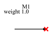

Stim

|
Property Name
|
Type
|
Keyword
|
Units
|
(Default) Value
|
|
default reference
|
string
|
|
|
M?
|
|
reference
|
string
|
|
|
|
|
weight
|
float
|
weight
|
|
1.0
|
The stim is used only in
Virtual Probing↑ applications to specify sources of stimulus in the system. See
Stimuli↑ where this is explained in the context of setting up a virtual probing application.
It defines a source of waves in a system.
The stim is an arrow with two pins - one at the head of the arrow and one at the tail. The one at the tail is usually not connected so it does not show up with a red x at the connection point when unconnected.
There are three types of situations for a stim:
-
independent stims - stims that define a source of wave emanation from a device pin whose waves are not related to any other waves in the system.
-
dependent stims - stims that define a source of wave emanation from a device pin but that are interrelated in some way with another.
-
defining stims - stims that define other stims. These are the stims that other dependent stims depend on.
If an independent or dependent stim is placed in a circuit, the arrow must connect directly to one and only one device port pin. It cannot be connected in the middle of a net and cannot be connected to two device pins directly connected together. This is because these stims define wave emanation from a device pin and if the arrow were connected to more than one device port, or in the middle of a wire, the device pin specified would be ambiguous.
A defining stim must have it’s arrow on a net containing only the tails of other dependent stims. This net can be formed by placing the arrow of a defining stim directly on the tails of other independent stims, or through wires connecting to the dependent stims, but again, the wire can only be connecting the arrow of a defining stim to the tails of one or more dependent stims with nothing else on the net.
When a defining stim exists in the circuit, the netlist will contain a stimdef statement. The stimdef will define the relationship between the defining stims and the dependent stims determined by the weight property value for the stim.
At the time that this manual was written, the application software does not handle a rare special case properly - currently it requires that if there is at least one defining stim in the system, that all other stims beside the defining stims are dependent (i.e. there are no independent stims). To work around this (unlikely) situation (until the software is changed), if there is a defining stim in the system, and you have some stims that you want to be independent, then just place a new defining stim behind each independent stim (i.e. instantiate a new defining stim and place the arrow on the tail of the independent stim making it dependent). Then everything will work properly.
As stims define sources of wave emanation, they
constrain the solution to the system. In some sense, you can view the solution of determining the waves emanating from each stim with respect to each
Measure Probe↑. Thus, for a properly constrained system, you should have a number of measure probes equal to the number of independent stims in the system (if there is no defining stim), or equal to the number of defining stims (see note above). You have an overconstrained system if you have more measurement probes and an underconstrained system if you have less.
That is actually the purpose of the defining stim - to reduce the number of unknowns by enforcing a relationship between waves emanating from device ports.
Note that the reference designator of the stim is not used for anything. See
stim↓ under
Netlist↓ for more information.